MenuBar and ContextMenu
The controls MenuBar and MenuItem provide an easy way to add a menu system to your program.
Menu Bar
To create a menu bar in InForm, follow these steps:.
a) Click the InForm designer's Insert menu button, then select Menu Bar from the drop-down menu to create a new MenuBar.
b) The menu bar will be created with the first item highlighted.
c) Create additional menu items by clicking the grayed-out Add new option.
d) Add sub-menu items by clicking the grayed-out Add new option.
InForm Designer.
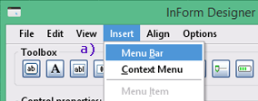Preview window.
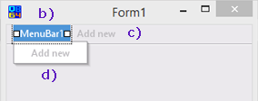Note 1: An alternative method to create a menu bar is to right-click anywhere in the preview window. From the pop-up menu, choose New MenuBar control.
Note 2: Menu fonts and colors are based on the main form; they will change accordingly when you edit the main form's font and color properties.
Configure bar items.
After adding bar menu and sub-menu items, you will notice they have been automatically given identities and caption text. These require configuration. The easiest method is to leave the name unchanged and modify the caption only.
1) Begin by updating all bar menu items. For example, the first two items can be updated to "File" and "Edit." The last item (MenuBar3) is highlighted and ready to be changed.
2) Both the Name and Caption text boxes display "MenuItem3." Change the Caption text from "MenuItem3" to "Help."
3) After pressing Enter, the preview window's menu bar changes from "MenuBar3" to "Help." The Name text box changes from "MenuBar3" to "HelpMenu."
InForm Designer.
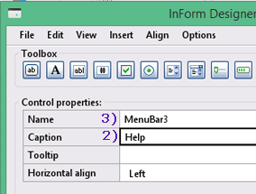Preview window.
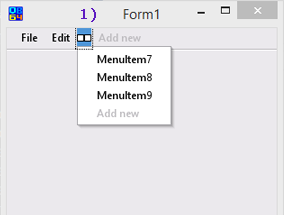Configure drop-dowmn items.
After configuring menu-bar items, their corresponding drop-down sub-menu lists require configuration. Similar to the bar-menu, these were automatically given identities and caption text. The easiest method is to leave the Name unchanged and modify the Captions only.
a) Select the menu-bar item required by clicking on it, and its corresponding drop-down list is displayed.
b) Click on the menu item you want to change; it becomes highlighted to indicate selection.
c) Change the Caption text from "MenuItem2" to "Open" and press Enter.
d) After pressing Enter, the preview window's drop-down menu item changes from "MenuItem2" to "Open." The Name text box changes from "MenuItem2" to "FileMenuOpen."
InForm Designer.
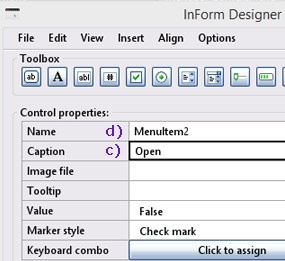Preview window.

Note: For steps c) and d), the Name and Caption fields initially display the creation default, in this example, "MenuItem2."
Context Menu
Create a Context menu.
a) Click the InForm Designer's Insert menu button. From the drop-down menu, select Context Menu to create a new Context Menu.
b) The context menu is created with the body highlighted. Create additional menu items by clicking the grayed-out Add new option. Add sub-menu items by clicking the grayed-out Add new option.
InForm Designer.

Preview window.
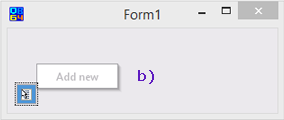Note 1: An alternative method to create a context menu is to right-click anywhere in the preview window. From the pop-up menu, choose "New ContextMenu control."
Note 2: Menu fonts and colors are based on the main form; they will change accordingly when you edit the main form's font and color properties.
Configure context menu name.
More than one context menu can be instantiated. Each menu will have a corresponding symbol added to the bottom left-hand corner of the preview window. If you wish to change a context menu name, follow these steps; generally, you will leave these unchanged.
1) In the preview window, click on the context menu symbol. This highlights the selection.
2) Change the name as required. For example, change the pre-defined name from "ContextMenu1" to your desired name.
InForm Designer.
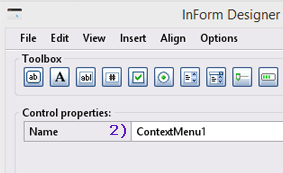Preview window.
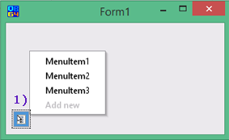Configure context menu items.
Menu items require configuration. The easiest method is to leave the Name unchanged and modify the Caption only.
a) Select the menu item to change: In the preview window, click on the context menu symbol and then on the menu item you want to change.
b) Change the caption from "MenuItem2" to the required text. For example, "Abort."
c) After pressing Enter, the menu item is updated from "MenuItem2" to "Abort." The name (identity) changes from "MenuItem2" to "ContextMenu1Abort."
InForm Designer.
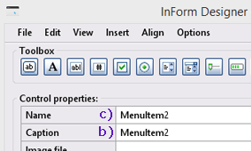Preview window.
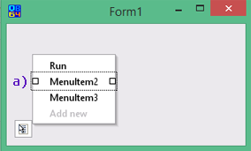Assign Context Menu.
After creating context menus, they are assigned to their respective controls, such as the main form. Follow these steps:
1) Note: In this example, two context menus have been created: ContextMenu1 and ContextMenu2.
2) Click the down arrow on the Context menu drop-down list.
3) From the dropdown list, select the menu you wish to assign.
InForm Designer.
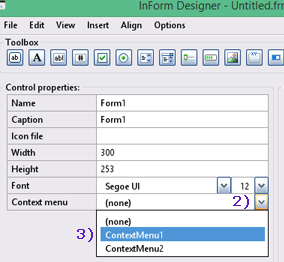Preview window.
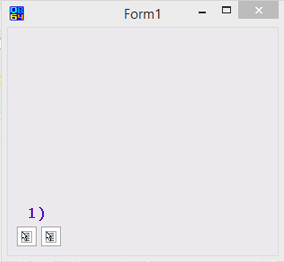Marker style example
Marker style example.
The space to the left of a menu item can be assigned a style, either a check mark (✓) or bullet (●).
a) Setting the Value to True enables styles, while a value of False disables styles. Selections are made using the drop-down menu.
Note: Setting the Value to False disables styles, as shown in 3).
b) After enabling styles, select the desired style using the drop-down menu. Choose either Check mark or Bullet.
Properties: ActionMenuRunMySQL
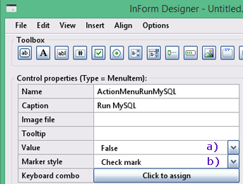Marker style example.
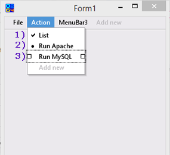Common menu Techniques
Here are the techniques explained:
- Add Hot-key Shortcuts: Use the SetCaption function (or at design time in the Editor) by adding an ampersand (&) before the desired letter ("&File", "E&xit").
- Add a Separator: Finish the item before the desired separator position with a hyphen ("-"), like "Save &as... -".
- Menu Item Icons: Menu items can have icons, which must be regular 16x16 pixel images (not .ico files). Select the "Image file" property in the editor and enter the image file name.
- Checked Menu Items: Set the Value property of a menu item to True to make it checked.
- Grouped and Bulleted Menu Items: Set the MarkerStyle property to Bullet (from CheckMark) and set the Value property to True.
Note that if a menu item contains an image icon, it won't be shown when the item is "checked." - Align the Last Menu Item: The last menu item can be aligned to the right on the menu bar. Select it and choose "Right" in the "Text align" drop-down list.
- Reordering Menu Items: After adding a menu item or menu bar item, you can reorder them by changing their z-order (Edit->Z-ordering).
Use the SetRadioButtonValue method to set the value of a MenuItem control created with the bullets style to True at runtime. This method ensures that the other MenuItem controls in the same group are first set to False.
SetRadioButtonValue ControlID